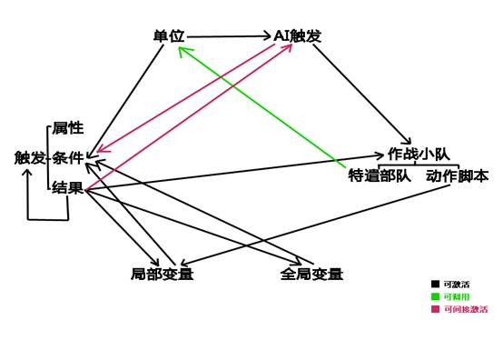

mapper核心思维指导
By：MorgensternHXD
自2000年Westwood发布RA2至今已有17载的光华春秋，在这漫漫的17年中，与其相关的DIY技术也在广大爱好者的不断研究和探索中取得了巨大的发展，优秀的DIY作品也是层出不穷。尤其是近5年来，更是有许多DIY作品的质量水平已远超当年的官方。在当今，经过多代前辈们的拓荒之后，各方面的地图教程已经相当完备，新手对于地图技术的学习也变得前所未有的容易。本篇文章的目的意在阐明一个优秀mapper所应具有的思维基础；并补齐技术性教程之外地图绘制思维指导方面的空缺。碍于我仅仅只涉足于地图领域不到5年，个人制图经验不足，故学术多有不精，如有不同见解，还望指出。
--目录--
l 地图美化思想
l 地形设计思想
l 触发编写思想
l 任务的内部装修思想
l 现时代mapper所应具有的觉悟
l 杂谈＆感谢影响了我的人
l 后记
--本篇文章核心思想基础：思维引导行动
【地图美化思想】
“费尽心思去做地图美化的意义?”，“华而不实的地图美化到底有什么作用？”诸如此类都早已不是什么新鲜论题，也有许多前辈曾发帖论述过这类问题，我实在没有必要把它当成本节的侧重点再说一遍。故本篇文章将与此论题相关的其他内容归至第三节【现时代mapper所应具有的觉悟】中进行论述。
就我个人的研究方向来讲，花费时间最多的就是地图美化，能力方面见长的也是地图美化，但与其他人提起美化技巧时，多数时候也仍是无话可讲...技术与艺术果然还是不能一概而论。琳琅满目的美化教程，所提供的只是以技术方式模拟艺术的模板，谓其本源，教程的编写者只有将自己艺术创作的思绪转化为技术，才能够完成对外界的表达。因此，想要自己的美化得到进步，所需要的是去通过体会比自己更优秀的mapper在自己作品中所蕴含的思绪；来理解更优秀的思维方式，从而获得自身的进步。以我自身举例，在我完成Quiet cityⅡ的制作之后，回头看自己往昔的作品，只能看到无数缺点但却找不到改进的方法，陷入了所谓的“瓶颈期”，但在见到sandman大大的作品之后，便确信自己找到了足够强大的“新模板”，经常对着一张截图端详数十分钟，吸收思想后运用到自己的作品中。经过很长一段时间半吊子式的模仿后，也总算是爬到了这座大山的半山腰（？）......回归刚刚的论题，地图美化因其艺术性区别于其他技术性制作技巧的特点，其优秀的定义也相比其他技巧较为模糊。这不免也为追求进步的mapper造成了麻烦“究竟如何才是好的？”，以我的个人经验来讲，我认为在制作时只要把自己能想到的一切都尽全力去表现，在空闲时尽力去丰富自己的想法，这样成就的作品内容自然就会丰富，至少也要比不假思索糊出的东西强得多。
地图的绘制是一件耗时而幸苦的工作，对精益求精的mapper来说就更是如此了，因为在绘制时想要长时间保持思维的灵敏度；行云流水地进行绘制是一件非常困难的事，所以在空闲时间思维灵敏的时候对地图场景做一些设计会很好的帮助自己充实地图内容。（好像跑偏成技术性论述了Orz...）
所谓地图场景，即地图中的微景观，类似于停车场、港口、机场、道路施工场地、杂物堆等都属于地图场景。地图场景与地图的关系就像是景观与园林之间的关系，丰富的微景观相互组合；最终构成整幅地图的风景画面。
本节总结：
成就优秀地图美化的基本思路，即：观察优秀作品——吸收思想——构思地图场景——构思结果——考虑调用的可行性——构思场景拼接方式——实际绘制——对比优秀作品——分析不足以及差距——吸收思想经验
个人作品参考：

(以上图片中使用的MOD分别为TC泰伯利亚危机，EASB丧命时刻以及RN复仇时刻)
【地形设计思想】
地形设计与地图美化之间的分界并不明显，现在的mapper大多数时候不会把这两项分开讨论。但我在考虑之后觉得，骨架和蒙罩物果然还是有很大区别......本附加节所论述的内容在野外地图中使用的几率相对城市地图要更大，而城市地图对于美化的要求相对野外地图要更高。
地形设计相对于地图美化来说是更为基础的技巧，但它也往往会被忽视，不会像美化一样被摘出来单独强调。它的定位就像是建筑物的混凝土结构，所包含的内容应有悬崖、水面以及大致的地形起伏；在此之后的美化就相当于建筑物的装修工作，必须建立在混凝土结构的基础之上。与长时间要求保持思维灵敏的美化不同，地形的设计往往很快就能完成，但未经悉心设计的地形也往往会导致成品缺少独特感而显得平淡无味。地形设计对于游戏流程，情节安排的影响远大于美化，而观望者最先看到的也肯定是建筑物的形体，而不是它表面某一处的细节装饰，因此，想要在茫茫的地图大海中使自己的作品独树一帜，创作出像“东方明珠”“迪拜塔”一样的作品，我们最先需要的就是它们的“图纸”，也就是在心中做出完整的规划（要求提前做出规划，这点类似地图场景）。在进行规划的同时也要注意不要忘记自己的风格，并勇于做出创新（举例：悬崖走势的组合运用，隧道的灵活运用）。
创新，说起来容易，可实践起来却是需要十分灵敏的思维，在自己灵感不足的时候，不妨去观察一下现实中的地形，大自然的鬼斧神工永远是mapper最好的老师。
地形元素，即为区域范围内的地形（地图场景的骨架），例如：峡谷瀑布组合、盆地湖泊组合、多裂谷风蚀地貌等。
本节内容总结：
设计独树一帜的地形的基本思路：熟练拼制悬崖（基本要求）——观察现实地形图（推荐分层设色地形图）——构思地形元素——构思元素组合方式——绘制大致地形图（手绘或数字形式亦可）——进行实际绘制
【触发编写思想】
触发编写不像地图美化，是一种技术性很强的制图技巧，这也就意味着它相较于美化，学习时更加有迹可循，故本节内容将不再对技术性教程可以解决的简单的因果对应触发问题作出讲解。
触发元素（姑且这么叫吧，实在找不到合适的名词Orz...）即为地图内经由一系列相互关联之后，可由某种判定因素激活，最终达成某种效果的系统的组成元件，例如：触发（包括属性、条件、结果）、AI触发、局部变量等，它们之间的关联形式如下图：

（本图只说明各元素之间的联系，具体的对应方式请参加其他教程）
熟悉上图之后，我们便可以通过各种元素之间的相互组合做出一些单一触发无法实现的“黑科技”，这类组合系统我们可以称之为“组合触发”（并不一定全部由触发组成，此处的“触发”指广义上的判定结构）。在此我要强调一点，基础的代码知识也属于触发元素的一环，所以我建议mapper至少要对mod教程进行通读以拓展自己的思考范围。下面我举两个代码知识与触发结合的实例：
例1：特殊单位判定：让玩家通过自身的选择影响触发结果
想要让玩家通过自己的选择来影响触发，最常见的方式是通过触发条件“单位被选取”+局部变量来实现，但因其极易导致剧情出戏而具有一定的适用范围，在此我们将讲述另一种实现方式。
想要让玩家自己选择触发的结果，重点便是如何实现“玩家选择”这个过程，查找触发条件后，我们发现“单位被选取”“进入事件”以及单位被攻击或摧毁类（包括受到伤害、渗透、科技类型不存在等）的触发条件可以由玩家通过自己的行为来实现触发，而“科技类型存在”这个触发条件却总是被人忽略。其实只要稍加思考，我们便可以获得另一种方案：ini新建一个用来激活触发的特殊单位，然后由玩家来选择建造即可实现我们的目的。（例如：魔王的宫殿）此方法联系单位建造条件以及高分量AI触发后亦可作为人类玩家和AI玩家的区分判定。
例2：要求达成某一条件后给予玩家一定金钱
我们都知道，编辑器中并不存在“给予...参战方金钱...”这样的触发结果，经过对各种可能性的思考之后我们将目标锁定在代码“ProduceCashStartup=”（建筑物被占领后获得金钱...），我们的方案就此完成：判定条件——更改带有“ProduceCashStartup=”的特殊建筑所属方为目标参战方，剩余的工作便是对各项参数的调整，使效果符合我们的预期。（此处不使用工程师小队占领目标建筑的原因是工程师小队的脚本对人类参战方无效）
由于触发的可用参数众多，所以触发的灵活性无疑是所有触发元素（“触发元素”的含义参见前面的名词解释）中最强的，而局部变量的存在更是增强了触发间相互联系的能力，使原本就灵活的触发机制变得更加强大。举个简单的例子：“与”“或”“非”是组合触发中常见的三种判定结构，而局部变量在这三种结构中都担任着联系两个触发的枢纽作用（“或”和“非”中的局部变量一定条件下可用触发结果中的“禁止目标触发”代替）。局部变量对于构思“黑科技”组合触发的重要性不言而喻。
本节内容总结：
触发编写的基本思路，即：熟悉触发元素（基本要求）——提出触发效果——设想可能有关的元素——分析元素关联性——提出方案——调整参数
【任务的内部装修思想】
任务想要吸引玩家，自然就需要拥有能够吸引玩家的闪光点，不论是精美的地形还是灵巧的触发，这一切任务元素都需要mapper来进行组织，因此既是编剧又是导演的mapper可谓是“身兼数职”
以电影来作比喻的话，RA2任务就像是一部战争片，但RA2任务不同于电影的一点就是这是一部可与观众“互动”的电影。这也意味着mapper在身为编剧和导演的同时也是玩家的引导者，需要负责带领玩家体验整个游戏的过程，这也要求着mapper必须站在观众的角度时刻想象玩家对于自己安排的每个情节的感受，以设法改进自己的作品。
作为一部电影，开头必须要迅速营造一个良好的环境氛围，快速吸引观众，让观众产生认真品味这部作品的欲望。因为RA2是一部战争游戏，所以快速营造氛围的最简单的方式，莫过于安插一个“好莱坞式开头”——紧握画面的紧张感与气氛的紧张感，精心编排一副战斗场面。（渗透或其他特殊类型任务亦可使用其他手法，但战斗场景开头最为范用）
精美的地形与宏大的战斗相结合，能够将玩家迅速代入剧情并提高玩家对于作品的第一评价。
关于任务开头另外重要的一点是：千万不要拖沓！这一点问题在我所接触过的许多mod任务中都有体现。转移镜头，消散路径点周围黑幕等都是任务开头的常用技巧，但如果使用过度就会带慢任务节奏，影响开头气氛的渲染并使玩家不免感到厌烦。我个人的建议是：将任务开头要讲的故事压缩在最短的时间内进行表现，并在此期间尽量丰富画面内容，一切围绕核心原则“渲染气氛”进行。当然此处的“尽量丰富画面内容”指的是用来渲染气氛的内容，而并非指任务信息内容。短时间将大量信息堆给玩家只会让玩家晕头转向，并降低对作品的评价。
当然，只拥有好的开头可不行，中间内容也需要我们来丰富完善，为保持作品在开头所营造的良好气氛，我们可以动用多方面的手段，像：合适的灯光，不失时宜的文字触发，符合气氛的背景音乐，细节性的小触发等都是我们的可选方案。不论使用了什么方法其目的都是为了保证“瞬间出戏”的情况绝对不会出现。（毕竟是战争游戏...建议csf的内容还是严肃一点比较好...）
关于任务节奏：虽然RA2所表现的内容是战争，但它的本质却是一部游戏。故mapper在规划任务流程时应让玩家感觉到游戏形势尽在自己的掌握之中，若把任务流程设计得像真实的战场那么风云变幻，敌军的进攻小队从四面八方涌来（有特殊要求的防守任务除外），会让玩家难以把握节奏，感到自己的一切行动都是被流程安排所逼迫的，那无疑会降低玩家的体验。总而言之只有一点：一切流程安排皆以玩家的体验为重。
防守任务应该让玩家在喘息与紧张之间循环，以保持合适的气氛紧张度。（参考原版酥7超时空防御战）
渗透任务应该为玩家留有足够的探索空间，让玩家在适度紧张的气氛中完成任务。（参考原版萌5 暗夜）
一般任务应顾忌到玩家的发展情况，合理安排进攻小队，让玩家能够规划自己的行动，实现自我拟定的小目标。
想要知道玩家对于自己作品的感受不能只靠臆想，当然，找一个玩家一边询问感受一边修改作品也不现实。因此，想要进一步优化玩家体验，我们不妨把目光锁定在那些自己评价很高的作品上（这里的“作品”范围不仅限于RA2，影视、游戏、文学等皆属于这个范围），分析它们的情节安排，找出它们吸引自己的地方，加以变通后运用在自己的作品中。
本节内容总结：
优化玩家感受的基本思路：精心编排的开头——运用多种元素营造合适的气氛——分析自己所喜欢作品的优点——对比并完善任务结构安排
【现时代mapper所应具有的觉悟】
众所周知，RA2的玩家正在渐渐减少这是无可异议的事实，在这样的环境条件下，mapper以及其他DIY爱好者是否仍有坚守的意义…为明晰这一问题的答案，我们需要寻溯这一问题的伊始——我们自己
最初接触的颜色、最初受到感触的文章、最初受到感动的音乐、虽然人各有异，但只要以创作领域为目标，那么自己的原点就举足轻重。不论是希望与玩家分享游戏的乐趣，不论是为了宣扬自己所希望贯彻的信条，哪怕亦或只是渴望证明自己的能力，创作者的这份心情已经在编制作品的过程中融入并促成了作品…基于创作者创作目的的不同，作品中所包含的信息也出现了多重的传达对象，这些对象可以是普通玩家，亦可是同样身为mapper的他人。对象身份的不同，也导致了对于作品解读方式的不同，所体会到的信息内容也定然不同...创作者若是明晰了这一点并加以利用，则可谓之颖悟绝伦。
艺术的产生过程分为两个部分，一是作者将自己的感情运用各种手法加以编制后浓缩在作品中，二是体验者基于自己对作品的感情体验进行的再创造，在产生艺术的过程中，作者与体验者已经完成了思想的交流，若是体验者向作者反馈自己的想法，那么这种交流就是双向的，这种交流的出现也正是对作者付出心血的最大认可。RA2地图的创作也一样如此，也许有人觉得游戏地图实在难归艺术之列，但就艺术的产生过程来看，不论mapper创作地图的动机是什么，其中一定包含了创作者有意亦或无意的感情，不论作者希望传达的对象是否为玩家，体验者定然存在，就此看来，mapper的创作确实是符合艺术的定义标准的。就此，明白了自己也身为艺术家的各位，是不是有一点小小的自豪感了呢（笑~），这份自豪感也正是对于自己拥有向外界表达情感能力的证明。
经过之前的论述，我们再次回归那个开始时的问题“我们究竟为什么而创作”。如果你理解了之前的内容，想必此时的你已经能够拿出问题的答案了...我们创作动力的本源一定不是为了玩家或其他的人，为RA2添加生命力更是冠冕堂皇的空话，说是因为创作的乐趣也只是表层的浮沫，这所有的一切全都来源于人最简单原始的渴望——对外界表达自身的情感。或许有人觉得这种说法太过冰冷严苛，但在这个没落的时代，在弥留与放弃之间踌躇的自己是在没有办法不去怀疑，怀疑自己究竟在为了什么而作...这幅答案，便是我寻找到的，希望自己可以称之为信条亦或信仰的，始终坚守的东西。不论信仰的对象是自己的能力，是创作的热情，还是绝对强于自己的目标，要说信仰能带来什么，那就是力量。因为有相信的道路，所以才能笔直前行。如果带着迷茫前进，到了关键时刻就无法发挥全力。这样的理解方式或许有些悲哀，但现时代mapper的处境确实已经悲哀到了需要为自己的存在寻找理由的地步...当然这也只是我的个人想法，并不代表DIY圈的集体观念。
承接上一观点，认识到创作是为了表述情感后，情感传达的对象似乎应该是创作者动力的来源，但对象的流失我们自然也无法左右，多数创作者在此时都会将自己的目标进行转移：由希望拥有尽可能多的体验对象转变为尽可能提高小部分体验对象的体验质量（再次强调，体验对象不只包括玩家），这也正是近几年来DIY圈技术爆炸的重要原因之一，毫无疑问技术爆炸为创作带来了更多可用的手法，但也拔高了新人的入门标准，对于玩家来讲，可供选择的优秀作品增多，曾经的创新如今看来已经是陈年旧物不再稀罕，这两点又在加速了传达对象的流失的同时又为还在坚守的创作者们带来了巨大压力，这种压力在迫使创作者们走向一个极端——将自己关入象牙塔之中。
简单解释一下，如果你认为自己的创作不是为了任何人、任何事，不再关心创作的意义，只是为做好而去做，那么你就已经步入了象牙塔。对于步入象牙塔的人应该拥有这一信条：情感表达的极致——繁杂而不失协调。
我个人并不反对这种创作态度，古往今来的那些举世无双的作品皆出自这样的人之手...不过，这也又是现时代创作者的另一份悲哀了...
一路走来，我们所剩下的难道只有惋惜与悲哀吗...这也并不尽然，回想自己开心创作的日子，那份创作的喜悦，成功传达感情时的欣喜...这些都是真实存在的，除了这些宝贵的心情，创作在不经意间，还带给了我们许多其他的东西...
回想我们自己还是新人的时候，在摸索前进时的兢兢业业，在遇到难题时的分析思考，这些都会是我们宝贵的经验。我们在学习技术时领悟到的思维方法，在制作作品时设想玩家感受的过程，以及到最后在作品完成发布时认真听取大家意见的经历，都是可以作用于我们的现实生活的宝贵财富，这些，都是我在作为RA2mapper的生涯中收获的意外之喜...仅仅因此我也会庆幸——我，是一名mapper
十分感谢大家将这篇拙略浅薄的文章阅读至此，若大家多少有些共鸣的话，我想请大家再一次，再一次确定自己的身份——创作者。以下，我将引出另一个概念：创作者之心
身为创作者，就应拥有属于创作者的骄傲，这份骄傲正是基于自己拥有向外界表达情感的能力而产生的，这份骄傲也要求我们时刻持有一种思想态度：创作者之心。对于玩家，我们自然不应妄自抱有阶级差距感，对于其他作者我们更应持以尊重，同为创作者的我们应该最能理解对方的创作本愿，尤其是在评价他人的作品时最不应忘记这一点（也许你认为”被别人指出自己的不足不是件好事吗？“但是技术和创造并不能一概而论。）...创作者之心的作用范围不仅仅限于RA2，对于其他领域的作品，我们在观赏体验时亦应尊重作者的情感，分析体会作者想要与我们分享的内容...这些思考方式也正是我们作为mapper的另一点收获。
本节内容总结：
现时代mapper所应具有的觉悟:
创作欲望的产生：源自表达情感的渴望
身为创作者的自豪：源于拥有表达情感的能力
表达情感的极致：繁杂而不失协调
身为创作者所能触及到的思绪：创作者之心
【杂谈＆感谢影响了我的人】
这篇文章写到这里，有一些内容本想依靠读者在本文章的引导下进行自我思考来传达，但我对自己的表达能力实在是没有多少信心，故决定在此单独列出：
n “有实力的人必须给一无是处的人帮忙”像这样的规定只会让有才能的人单方面遭受损失。
n 推开象牙塔的大门需要的是信仰之匙，你信仰的对象是自己的能力，是创作的热情，还是绝对强于自己的目标？
n 对于自己能力不足的弥补方式：定点连线和思维沉淀。对于又笨又不喜欢努力的自己来说，想要做出夺人眼球的作品就必需将每一个最优秀时刻的自己相叠加。
n 创作者之心影响着我们对于他人作品的认知态度和自己的创作态度。将心比心推己及人应是创作者之心的明确表现。另外，一无所知和索然无味的人体会不到这份感动，创作者应学会适应并做好相应的觉悟。
n 永远不要忘记那些拓荒前辈们的重大贡献，虽然他们当时的作品现在看来可能已经落后，但正是因为他们的存在，我们的学习才会变得如此容易，我们才有可能走到比他们更远的距离。
………………………………………………………………………………………………………………………………
至此，我要感谢在mapper之路上对我影响重大的四位老师
R-koakuma （贴吧ID：R-koakuma）
R-koakuma早年在爱拍视频的视频作品使我产生了对于自制地图的兴趣，并注册了自己的第一个百度账号，完成了我从玩家到创作者心态的转变，是我重要的启蒙老师。
ModerKenosis （贴吧ID：ModerKenosis）
MK大大整理的mod教程深刻影响了我对于mod和地图创作的认知方式，基础功能相互组合达成高级功能的方式不论在mod还是地图领域都是重要的基本思路。另外MK大大为DIY圈风气的维护做出了重大贡献，为我及之后的新人们创造了良好的学习空间和氛围，是对我影响最为深远的老师。
Madman-M （贴吧ID：Madman-M）
Madman-M是正式和我确认师徒关系的第一位老师，十分感谢您教会了我制作shp和vxl，使我的创作思维得到了拓展，并使我有机会接触到了其他DIY领域的各位前辈。您因为我异想天开的想法而一起与我鼓捣到深夜的每一天都将是我最珍贵的记忆，十分感谢您纵容了我当时的任性。除了在技术上的指导之外，Madman-M在其他方面也给予了我许多关怀，是我最温柔亲切的老师。您送给我的书籍我一定会永远珍藏。（小雪人=w=）
Sandman （贴吧ID：a351650226）
Sandman担任了MO3的地形设计和任务制作，是我所见到的技术水准最高的mapper之一（也许不需要加“之一”）。他的作品让我看到了RA2地图的表现力究竟可以做到什么地步，在第一次观摩到他的作品时我的心中只充满了难以言表的震惊，他对于地图细节和整体结构的处理可以说几乎达到了RA2地图的极限。他的作品深刻影响了我在创作后期对于地图制作的态度，让我重新开始审视地图制作并看到了地图之外的东西。他是当之无愧的“造梦先生”
之后我还要感谢那些曾经与我交流，使我在你们的作品中吸收到了宝贵经验的前辈们
感谢雌鹿前辈，紫龙前辈，塞恩前辈，
等诸多恕我无法在此一一列举的前辈们...
感谢一路上曾经与我相伴的朋友们，感谢地图未来，雾之糊，麦帕之家的各位，感谢你们给予我的温暖与关照，让我在这个领域探索的过程中收获了许多意外之喜。
感谢至今仍在DIY领域坚守的各位，愿大家永远怀有对于RA2永恒不变的热忱之心。
感谢此时阅读这些拙略浅薄文字的你，是你们的存在让我的所作所为拥有了意义，十分感谢...
【后记】（也许是后记之后的后记=。=）
这篇文章是我断断续续历时6个月写的，期间自己想到的很多，最后写出来却没有多少...中间自己的心情变化了许多次，同时我也不停的在怀疑、在害怕，怀疑自己的想法和语言是否太过幼稚，又害怕自己的这份心情是否能够传达到大家的心中......现在看来，即使是幼稚也无所谓了，因为自己已经做出了尝试...
对不起，最后变成了一篇杂乱的文章，但我只是把想到的东西原原本本写了下来......
………………………………………………………………………………………………………………………………
鸣谢：
Sandman ,极音艾可 帮我审阅了触发部分的初稿并提出了意见
DexterBell帮我审阅了【现时代mapper所应具有的觉悟】部分的初稿并提出了意见（虽然意见都很中肯得当，但我最后并没有做出修改...有些东西我实在不知道该如何表达，这是我个人的能力问题，十分抱歉....）
另外，关于定点连线和思维沉淀对于地图制作以及其他领域的作用我认为有必要结合实际进行叙述...除此以外我还接收到部分吧友认为地形和美化方面的处理比较困难的反馈，结合以上两点我准备另行起草《地图设计美化通则》，现已完成提纲，当然...具体是否进行写作仍决定于这篇文章的反馈。
(欢迎提出对于本文的意见，联系QQ：18******19)
再次感谢读到这里的你
============================END============================